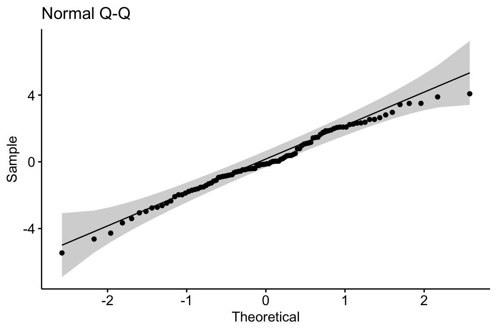
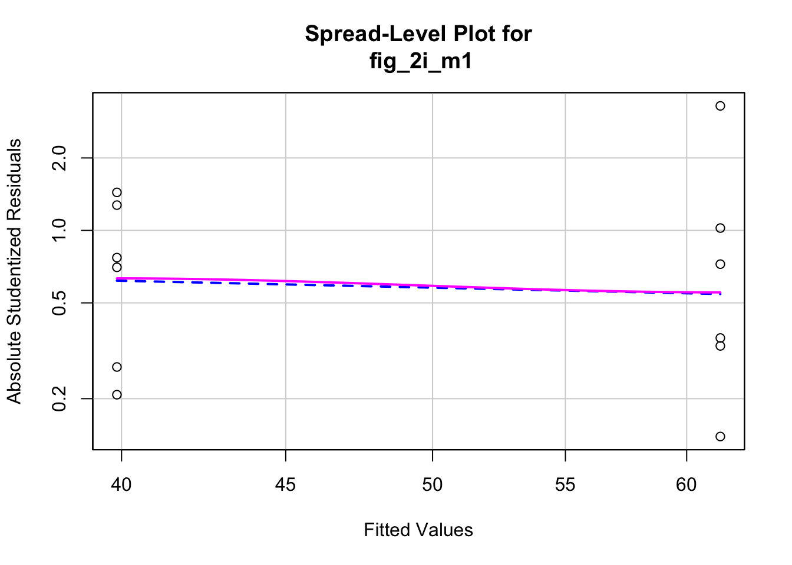

Chapter 10 Model Checking
# a function to transform a vector into quantiles
# not if the data are 1:n then the output is "rankits"
quantilize_1 <- function(x){
# this is the ppoints(x) function
m <- length(x)
s <- trunc(rank(x))
a <- ifelse(m <= 10, 3/8, 1/2)
q <- (s-a)/(m + (1-a) - a)
return(q)
}10.1 Do coefficients make numeric sense?
10.2 All statistical analyses should be followed by model checking
We us a linear model (or statistical model more generally) to infer effects or predict future outcomes. Our inference is uncertain. Given some modeling assumptions, we can quantify this uncertainty with standard errors, and from these standard errors we can compute confidence intervals and p-values. It is good practice to use a series of diagnostic plots, diagnostic statistics, and simulation to check how well the data approximate the fit model and model assumptions. Model checking is used to both check our subjective confidence in the modeled estimates and uncertainty and to provide empirical evidence for subjective decision making in the analysis workflow.
NHST blues – Researchers are often encouraged by textbooks, colleagues, or the literature to test the assumptions of a t-test or ANOVA with formal hypothesis tests of distributions such as a Shaprio-Wilks test of normality or a Levine test of homogeneity. In this strategy, an alternative to the t-test/ANOVA is used if the distribution test’s p-value is less than some cut-off (such as 0.05). Common alternatives include 1) transformations of the response to either make it more normal or the variances more homogenous, 2) implementation of alternative tests such as a Mann-Whitney-Wilcoxon (MWW) test for non-normal data or a Welch t-test/ANOVA for heterogenous variances. The logic of a test of normality or homogeneity before a t-test/ANOVA isn’t consistent with frequentist thinking because the failure to reject a null hypothesis does not mean the null hypothesis is true. We shouldn’t conclude that a sample is “normal” or that the variances are “homogenous” because a distributional test’s p-value > 0.05. But, maybe we should of the distributional pre-test as an “objective” model check? The logic of this objective decision rule suffers from several issues. First, the subsequent p-value of the ttest/ANOVA test is not valid because this p-value is the long-run frequency of a test-statistic as large or larger than the observed statistic conditional on the null – not conditional on the subset of nulls with \(p > 0.05\) in the distribution test. Second, real data are only approximately normal; with small \(n\), it will be hard to reject the null of a normal distribution because of low power, but, as \(n\) increses, a normality test will reject any real dataset. Third, and most importantly, our analysis should follow the logic of our goals. If our goal is the estimation of effects, we cannot get meaningful estimates from a non-parametric test (with a few exceptions) or a transformed response, as these methods are entirely about computing a “correct” p-value. Good alternatives to classic non-parametric tests and transformations are bootstrap estimates of confidence limits, permutation tests, and generalized linear models.
10.3 Linear model assumptions
Assumptions of a linear model concern the distribution of the “random draw” in the underlying statistical model. Again, in the random error specification of a linear model
\[\begin{align} Y &= \beta_0 + \beta_1 X + \varepsilon\\ \varepsilon &\sim N(0, \sigma) \tag{10.1} \end{align}\]the random draw (the “error”) is from a normal distribution with mean zero and standard deviation \(\sigma\). In the random conditional response specification
\[\begin{align} y_i &\sim N(\mu_i, \sigma)\\ \mathrm{E}(Y|X) &= \mu\\ \mu_i &= \beta_0 + \beta_1 x_i \tag{10.2} \end{align}\]the random draw is a value drawn from a normal distribution with mean \(\mu_i = \beta_0 + \beta_1 x_i\) and variance \(\sigma^2\). Any inference about the parameter \(\beta_1\) (such as confidence intervals or hypothesis tests) assumes that the these distributions are IID Normal where IID is independent and identically distributed and Normal refers to the Normal (or Gaussian) distribution.
- Independent means that the error for one case cannot be predicted from the error of any other case. This lack of independence creates correlated error. There are lots or reasons that errors might be correlated. If individuals are measured both within and among cages, or tanks, or plots, or field sites, then we’d expect the measures within the same unit (cage, tank, plot, site) to err from the model in the same direction because of environmental features shared by individuals within the unit but not by individuals in other units. Multiple measures within experimental units create “clusters” of error. Lack of independence or clustered error can be modeled using models with random effects. These models go by many names including linear mixed models (common in Ecology), hierarchical models, multilevel models, and random effects models. A linear mixed model is a variation of model (10.1).
tl;dr – Measures taken within the same individual over time (repeated measures) are correlated and are common in all areas of biology. In ecology and evolutionary studies, measures that are taken from sites that are closer together or measures taken closer in time or measures from more closely related biological species will tend to have more similar error than measures taken from sites that are further apart or from times that are further apart or from species that are less closely related. Space and time and phylogeny create spatial, temporal, and phylogenetic autocorrelation. Correlated error due to space or time or phylogeny can be modeled with Generalized Least Squares (GLS) models. A GLS model is a variation of model (10.1).
Identical means that the errors are “drawn” from the same distribution. Since the model is a linear model, this distribution is a Normal distribution with mean zero and variance \(\sigma^2\). A consequence of “identical” is that the error variance is homoskedastic, or constant, or independent of \(X\). If the error variance differs among the \(X\) then the errors are heteroskedastic. Many biological processes generate data in which the error is a function of the mean. For example, measures of biological variables that grow, such as lengths of body parts or population size, have variances that “grow” with the mean. Or, measures of counts, such as the number of cells damaged by toxin, the number of eggs in a nest, or the number of mRNA transcripts per cell have variances that are a function of the mean. Both growth and count measures can sometimes be reasonably modeled using a linear model but more often, they are better modeled using a generalized linear model (GLM), which is an extension of a linear model. Heteroskedasitc error arising for other reasons, both biological and experimental, can be modeled with Generalized Least Squares (GLS) or with linear mixed models..
Normal (Gaussian) error means that 1) the response is continuous and 2) the probability of sampling an individual measuring 0.5 units below the population mean is the same as the probability of sampling an individual measuring 0.5 units above the population mean. Counts (number of cells, number of eggs, number of mRNA transcripts) and binary responses (sucessful escape or sucessful infestation of host) are not continous and often often have asymmetric probablity distributions that are skewed to the right and while sometimes both can be reasonably modeled using a linear model they are more often modeled using a generalized linear model (GLM), which, again, is an extension of the linear model in equation (10.1).
10.4 Diagnostic plots use the residuals from the model fit
10.4.1 Residuals
A residual of a statistical model is \(y_i - \hat{y}_i\). Remember that \(\hat{y}_i\) is the predicted value of \(Y\) when \(X\) has the value \(x_i\) (compaactly written as \(X=x_i\)). And remember that \(\hat{y}_i\) is the estimate of \(\mu_i\). For linear models (but not generalized linear models), the residuals of the fit model are estimates of the \(\varepsilon\) in equation (10.1). This is not true for generalized linear models because GLMs are not specified using (10.1).
Alert A common misconception is that inference from a linear model assumes that the response (the measured \(Y\)) is IID Normal. This is wrong. Either specification of the linear model shows precisely why this conception is wrong. Model (10.1) explicitly shows that it is the error that has the normal distribution – the distribution of \(Y\) is a mix of the distribution of \(X\) and that of the error. A more general way of thinking about the assumed distribution uses the specification in model (10.2), which shows that it is the conditional response that is assumed to be IID normal. Remember, a conditional response (\(y_i\)) is a random draw from the infinite set of responses at a given value of \(X\).
Let’s look at the distribution of residuals versus the response for a hypothetical experiment with a single, categorical \(X\) variable (the experimental factor) with two levels (“Cn” for control and “Tr” for treatment). The true parameters are \(\beta_0 = 10\) (the true mean for the control group, or \(\mu_{0}\)), \(\beta_1=4\) (the difference between the true mean for the treatment minus the true mean for the control, or \(\mu_1 - \mu_0\)), and \(\sigma = 2\) (the error standard deviation).

(#fig:model-check-histogram, model-check-residuals1)Histogram of the (A) response, showing with modes near the true means of each group and (B) residuals, with a mode for both groups at zero.
The plot above shows a histogram of the response (A) and residuals (B). In the plot of the response, the mode (the highest bar, or bin with the most cases) includes true mean for each group. And, as expected given \(\beta_1=4\), the modes of the two groups are 4 units apart. It should be easy to see from this plot that the response does not have a normal distribution. Instead, it is distincly bimodal. But the distribution of the response within each level looks like these are drawn from a normal distribution – and it should. In the plot of the residuals, the values of both groups are shifted so that the mean of each group is at zero. The consequence of the shift is that the combined set of residuals does look like it is drawn from a Normal distribution.
The two plots suggest two different approaches for model checking. First, we could examine the responses within each level of the experimental factor. Or, second, we could examine the residuals of the fit model, ignoring that the residuals come from multiple groups. The first is inefficient because it requires as many checks as there are levels in the factor. The second requires a single check.
Alert Some textbooks that recommend formal hypothesis tests of normality recommend the inefficient, multiple testing on each group separately. This isn’t wrong, it’s just more work than it needs to be and also suffers from “multiple testing”.
10.4.2 A Normal Q-Q plot is used to check normality
A Normal Q-Q plot of the residuals can be used to check how closely the residuals approximate a normal distribution. A Normal Q-Q plot is a scatterplot of
- sample quantiles on the y axis. The sample quantiles is the vector of \(N\) residuals in rank order, from smallest (most negative) to largest (most positive). Sometimes this vector is standardized (doing this makes not difference to the interpretation of the Q-Q plot).
- standard normal quantiles on the x axis. This is the vector of standard normal quantiles given \(N\) elements in the vector.
Stats 101 A quantile is the value of a distribution that is greater than \(p\) percent of the values in the distribution. The 2.5% quantile of a uniform distribution from 0 to 1 is 0.025. The 2.5% quantile of a standard normal distribution is -1.96 (remember that 95% of the values in a standard normal distribution are between -1.96 and 1.96). The 50% quantile of a uniform distribution is 0.5 and the 50% quantile of a standard normal distribution is 0.0 (this is the median of the distribtion – 50% of the values are smaller and 50% of the values are larger).
Stats 201 A Q-Q plot more generally is a scatter plot of two vectors of quantiles either of which can come from a sample or a theoretical distribution. In the GLM chapter, the text will introduce Q-Q plots of residual quantiles transformed to have an expected uniform distribution. These are plotted against theoretical uniform quantiles from 0 to 1.
If the sampled distribution closely approximates a normal distribution, the scatter should fall along a line from the bottom, left to the top, right of the plot. The interpretation of a normal Q-Q plot is enhanced with a line of “expected values” of the sample quantiles if the sample residuals are drawn from a normal distribution. The closer the sample quantiles are to the line, the more closely the residuals approximate a normal distribution. Because of sampling, the sampled values always deviate from the line, especially at the ends. If the sample was drawn from a normal distribution, these deviations should be small if the sample size is big, but can be more pronounced with a small sample size. This makes it hard to have much confidence in the “normality” of a small sample.
Let’s have a look at a Normal Q-Q plot of the residuals of the fake data generated above.

Rules of a Q-Q plot
At the small end of the distribution (bottom-left), the sample values are a bit more negative than expected, which means the left tail is a bit extended. At the large end (upper-right), the sample values are, a bit less positive than expected, which means the right tail is a bit shortened. Should we fit a different model given these deviations? To answer this, we look look at the shaded area, which represents the range of expected deviations from expectation (the line) given the sample size. Clearly the deviations are within this range.
Now let’s look at simulated samples drawn from non-normal distributions to identify their characteristic deviations.
10.4.2.1 Right skewed
Many biological measures are from a distribution with long, right tails (right skewed). Examples include many count variables (number of eggs in a clutch, number of cells colonized by a parasite), and measures of time, weight, or length. What is common to all of these is unconstrained upper bounday but a constrained lower boundary at or above zero (A nest might have zero but eggs. The weight of a fat depot must be greater than zero but the weight of a specific species of fish in a trawl catch might be zero).
A long right tail of conditional responses creates a characteristic positive deviation of the largest quantiles in a Normal Q-Q plot of the residuals from a linear model. Positive deviations at the upper end indicate larger values than expected given a normal distribution. This is the signature of the residuals of a linear model fit to right skewed data.
A continous response with a right skewed distribution can be modeled with a generalized linear model using a lognormal or gamma distribution. A count response can be modeled with a generalized linear model using a Poisson, quasi-Poisson, or negative binomial distribution (Chapter xxx).
10.4.2.2 Excess zeroes
Count data often have an excess of zeroes (for example a lake with no nests or a host with no parasites), resulting in positive deviations (closer to zero) at the lower end of the quantile range.
# zero inflated
mu_pois <- 2.7
beta_pois <- 2
p_zero <- 0.3
fd.zipois <- data.table(
Treatment=rep(c("Cn", "Tr"), each=n),
Response=c(SpiecEasi::rzipois(n, lambda = mu_pois, pstr0 = p_zero), SpiecEasi::rzipois(n, lambda = (mu_pois+beta_pois), pstr0 = p_zero))
)
m1 <- lm(Response ~ Treatment, data=fd.zipois)
fd.zipois[, Residual:=residuals(m1)]
gg1.zipois <- gghistogram(data=fd.zipois, x = "Response",
color="Treatment", fill="Treatment",
add = "mean", rug = FALSE,
bins=9,
palette = c("#00AFBB", "#E7B800")
)
gg3.zipois <- ggqqplot(data=fd.zipois, x = "Residual", title="zero-inflated poisson")
gg3.zipois
10.4.2.3 Constrained lower and upper bounds
Proportions are constrained to values between zero and one. A proportion can have a distribution that approximates a normal distribution if the mean is near 0.5 and the standard deviation is small. But, more generally, proportions can have distributions with diverse shapes.